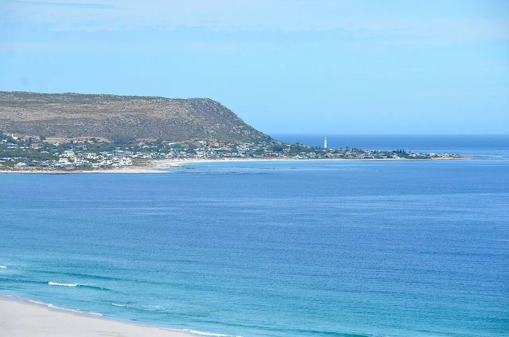

Long Beach — Kommetjie
Péninsule du Cap, Afrique du Sud · surf

Longue plage au nord du village de Kommetjie, face à l’Atlantique, non loin du phare de Slangkop. Ses pics de beach break captent bien la houle quand le côté False Bay reste plat.
- Lieu
- Péninsule du Cap, Afrique du Sud
- Niveau
- Intermédiaire
- Activités
- surf
- Type d'eau
- Mer / océan
- Coordonnées
- -34.14, 18.33 (position approximative du secteur)
Dangers à connaître
- Eau très froide (remontées d’eau de l’Atlantique).
- Courants et bancs de sable changeants par grosse houle.
- Kelp et rochers aux extrémités de la plage.
Le conseil d'Ocean Buddy
L’eau est froide côté Atlantique : prévois une combinaison épaisse et des chaussons.
Ouvrir dans Ocean Buddy Télécharger sur l'App Store
Source : Fiche Ocean Buddy · septembre 2026 · à vérifier localement.